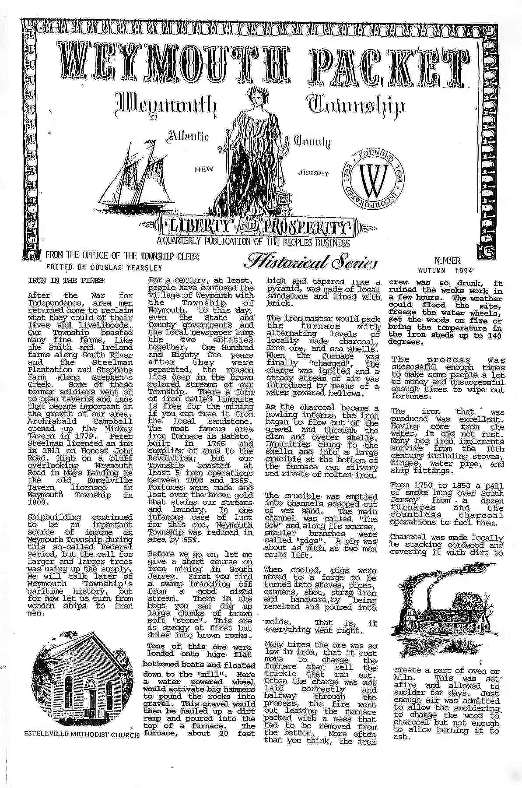
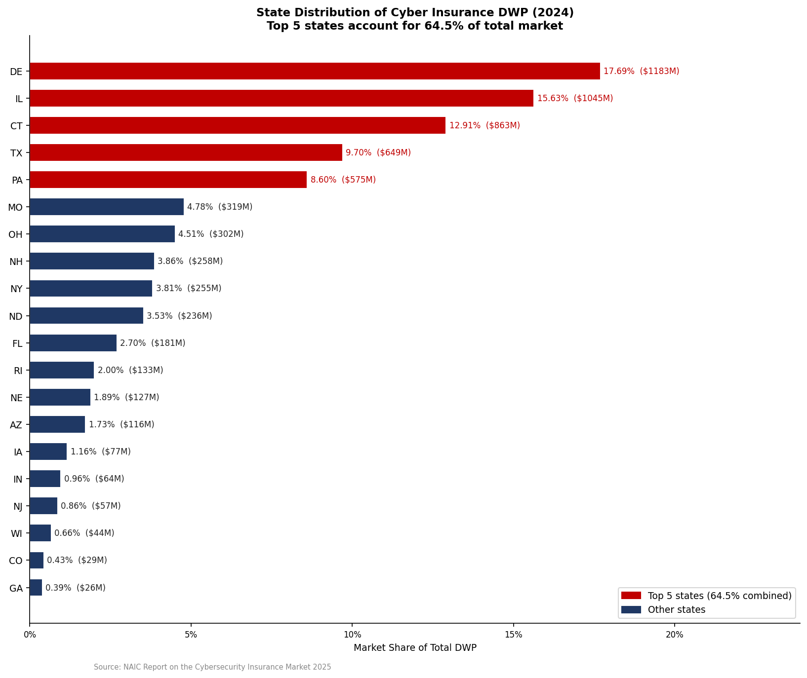

OCR Pipeline System
Multi-stage OCR pipeline to transcribe archived documents for upload to Preservica and use in Dublin Core template automation.
Tools
Python pipeline built around two OCR engines — Tesseract (LSTM) and PaddleOCR (PP-OCRv5) — with OpenCV and scikit-image for preprocessing. Tested across three historical document scans spanning 1918–1994.
Pipeline Stages
- Image preprocessing (grayscale, bilateral filtering, CLAHE contrast enhancement, adaptive/Sauvola thresholding — four interchangeable modes)
- Column detection via bounding-box coordinate ranges, for multi-column newspaper layouts
- Reading-order sorting and line merging
- Confidence-based filtering and dictionary-based post-correction (two-pass regex + whole-word substitution)
- CSV/JSON logging of every run for reproducible comparison
Key Finding: Preprocessing Isn't Always Helpful
On a 1994 newsletter scan that had already been enhanced in Photoshop prior to scanning, raw grayscale input outperformed every automated preprocessing mode — applying further thresholding to an already-enhanced image degraded results (a "double processing" effect). On an older, unenhanced 1920s newsletter, the opposite was true: CLAHE contrast enhancement performed best. This established a core pipeline principle — preprocessing must be validated per document, not applied by default.
| Document | Engine | Best CER | Best WER | Avg Confidence |
|---|---|---|---|---|
| Weymouth Packet (1994) | Tesseract | 6.6%* | 7.1%* | 89.4% |
| Dorothy Newsletter (1920s) | Tesseract | 66.8% | 80.2% | 76.8% |
| Dorothy Newsletter (1920s) | PaddleOCR | 75.4% | 93.6% | 94.4% |
*After two-pass dictionary correction
Key Finding: High Confidence ≠ Correct Output
On the older newsletter, PaddleOCR reported much higher per-segment confidence than Tesseract (94–95% vs 77%) while producing a substantially worse character error rate. The cause was reading-order failure: PaddleOCR was recognizing individual words correctly but assembling multi-column text in the wrong sequence, and separately, was silently downscaling a 9,672px-wide scan to fit a 4,000px internal limit. Confidence scores reflect per-segment recognition quality, not document-level correctness.
Debugging Note
A version upgrade to PaddleOCR (PP-OCRv5) changed its output format from indexed lists to a named-field result object. Code written against the old format silently mis-parsed the new one — returning single characters instead of text segments — without raising an error. Caught by inspecting raw output structure directly rather than trusting prior API documentation.

PDF Table Extractions
OCR + NLP system extracting structured tables from PDFs for cybersecurity analysis.
View System →Source Reports
Tables and figures extracted from three published PDF reports — the Verizon Data Breach Investigations Report (DBIR) 2025, the IBM Cost of a Data Breach Report 2025, and a NAICS sector breakdown — using PyMuPDF for page rendering and OpenCV contour detection to isolate table regions, followed by OCR and regex-based field parsing into clean tabular data (attack vectors, breach costs, threat actions, industry patterns by region).
Resulting Dashboard
A Streamlit dashboard built on the extracted data, scoring IBM's attack vectors by a composite risk score = average breach cost × frequency of occurrence, then classifying each vector into four quadrants — Critical (high cost + high frequency), Catastrophic (high cost, lower frequency), Chronic (high frequency, lower cost), and Low — using median splits on both dimensions.
Visualizations
- Risk-category bubble chart: frequency vs. average cost, bubble size = risk score
- KPI summary cards for Verizon DBIR's top-level risk metrics
- Horizontal lollipop charts comparing threat actions and attack patterns by global breach share
- Sidebar filtering by risk category and report section
Libraries
- PyMuPDF (fitz) + OpenCV — table/figure region extraction from source PDFs
- pandas / numpy — data cleaning (currency and percentage string parsing) and risk scoring
- scikit-learn (MinMaxScaler) — normalizing cost/frequency for comparison
- Streamlit + Matplotlib — interactive dashboard and custom chart styling